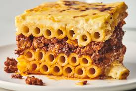

Pastitsio

Greek style lasagna
A Greek baked dish made of ground meat
layered with pasta and usually topped
with white sauce and cheese.
Has a bottom layer that is a tubular pasta,
with cheese or egge as a binder; a middle
layer of ground beef, or a mix of ground beef
and ground pork with tomato sauce, cinnamon and
cloves. Top layer consisting of bechamel or a
mornay sauce.
Ingredients
For the Tomato Meat Sauce:
- 3 tablespoons good olive oil
- 1 1/2 cups chopped yellow onion
- 1 pound lean ground beef
- 1 pound lean ground lamb
- 1/2 cup dry red win
- 1 tablespoon minced garlic
- 1 tablespoon ground cinnamon
- 1 teaspoon dried oregano
- 1 teaspoon fresh thyme leaves
- Pinch of cayenne pepper
- 1 can crushed tomatoes in puree
- Kosher salt
- Freshly ground black pepper
For the Bechamel:
- 1 1/2 cups whole milk
- 1 cup heavy cream
- 4 tablespoons unsalted butter
- 1/4 cup all-purpose flour
- Salt and freshly groun black pepper
- 1 1/2 cups freshly grated Parmesan and Kasseri cheese
- 2 extra-larges eggs, beaten
- 2/3 cup Greek-style yogurt, such as fage total
- 3/4 pound tubular pasta
Steps
-
For the sauce, heat the olive oil over medium-high heat
in a large pot. Add the onion and saute for 5 minutes.
add the beef and lamb, and saute over medium heat for 8
to 10 minutes, until it's no longer pink, crumbling it
with the back of the wooden spoon. Drain off any exccess
liquid, add the wine, and cook for 2 more minutes. Add
the garlic, cinnamon, oregano, thyme, and cayenne, and
continue cooking over medium heat for 5 minutes. Add the
tomatoes, 2 teaspoons salt, add 1 teaspoon pepper and simmer,
stirring occasionally, for 40 to 45 minutes. Set Aside.
-
Preheat the oven to 350 degrees F.
-
For the bechamel, heat the milk and cream together in a small
saucepan over medium-low heat until simmering. In a medium
saucepan, melt the butter. Add the flour and cook over medium
heat, whisking constantly for 2 minutes. Pour the warm milk and
cream mixture into the butter and flour mixture, whisking constatly.
Continue cooking, stirring occasionally, over medium heat for 5 to 7,
minutes, until smooth and thick. Add the nutmeg, 1 teaspoon of pepper.
Stir in 3/4 cup of parmesan cheese, 1/2 cup of the tomato and meat
sauce, and allow to cool for 10 minutes. Stir in the eggs and yogurt
and set aside.
-
Meanwhile, cook the pasta in a large pot of boiling water util al dente.
Don't over-cook becauses the pasta will later be baked. Drain and set
aside.
-
Add the pasta to the meat and tomato sauce, and pour the mixture into a
baking dish. Spread the bechamel evenly to cover the pasta and sprinkle
with the remaining 3/4 cup Parmesan cheese. Bake for 1 hour, until golden
brown and bubbly. Set aside for 10 minutes and serve hot.